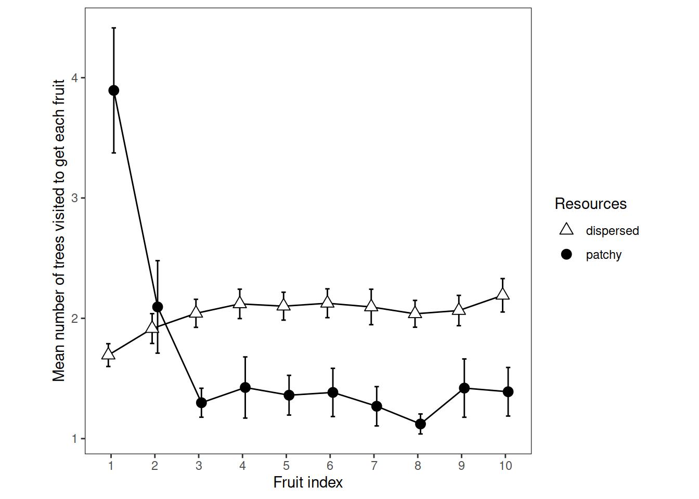

Chapter 5 Retrieval Rate
Experiment 1
e1 <- readRDS("001-00-e1-data.RDS")
# remove things from the raw data to make it suitable for this particular analysis
# remove samples that did not look at a tree
e1 <- e1 %>% filter(fl>0)
# remove the second (and any subsequent) *consecutive* duplicates
e1 <- e1 %>%
group_by(pp, rr, tb) %>%
filter(is.na(tl != lag(tl)) | tl != lag(tl)) %>%
ungroup()
# remove trials where they failed to get 10 fruit
e1 <- e1 %>%
group_by(pp, te) %>%
mutate(max_fr = max(fr)) %>%
ungroup() %>%
filter(max_fr==10)
# how many trees to get each fruit?
# this is neat and it needs to be done after reducing the data to row-per-valid-tree-visit
e1$ntrees_to_get_a_fruit = NA
j = 0
for (k in seq_along(e1$ix)) {
j = j + 1
if (e1[k, 'fl']==2) {
e1[k, 'ntrees_to_get_a_fruit'] = j
j = 0
}
}
# remove any remaining NAs
e1 <- e1 %>% filter(!is.na(ntrees_to_get_a_fruit))
# average over trials (and ignore stage) to yield participant means suitable for ggplot and ANOVA
rtv = e1 %>%
select(pp, rr, tb, fr, ntrees_to_get_a_fruit) %>%
group_by(pp, rr, fr) %>%
summarise(mu=mean(ntrees_to_get_a_fruit)) %>%
ungroup() %>%
mutate(pp=as_factor(pp), rr=as_factor(rr), fr=as_factor(fr))
saveRDS(rtv, "e1_retrieval_plot_data.rds")5.1 ANOVA
options(contrasts=c("contr.sum","contr.poly"))
e1_retrievalrate_ANOVA <-
ezANOVA(data=rtv,
dv=mu,
wid=pp,
within=c(rr, fr),
type=3)
prettify_anova(e1_retrievalrate_ANOVA, "Retrieval rate")| Effect | DFn | DFd | F | p | sig |
|---|---|---|---|---|---|
| rr | 1 | 41 | 54.14 | 0.000 | *** |
| fr | 9 | 369 | 22.99 | 0.000 | *** |
| rr:fr | 9 | 369 | 46.85 | 0.000 | *** |
prettify_sphericity(e1_retrievalrate_ANOVA, "Retrieval rate")| Effect | GGe | p[GG] | sig[GG] | HFe | p[HF] | sig[HF] |
|---|---|---|---|---|---|---|
| fr | 0.435 | 0.000 | *** | 0.486 | 0.000 | *** |
| rr:fr | 0.536 | 0.000 | *** | 0.617 | 0.000 | *** |
prettify_corrected_dfs(e1_retrievalrate_ANOVA, "Retrieval rate")The effect of fruit after Greenhouse-Geisser correction for sphericity violation was F(3.91, 160.43) = 22.99, p< .001
The fruit x resources interaction after Greenhouse-Geisser correction for sphericity violation was F(4.83, 197.91) = 46.85, p< .001
5.2 Plot
# Ten points along the x axis, each participant contributes one point per cell
ggplot(
data=rtv,
aes(x=fr, y=mu, group=rr, pch=rr, fill=rr)
) +
theme_bw()+
theme(aspect.ratio = 1, panel.grid=element_blank())+
scale_fill_manual(name="Resources", values=c("white", "black")) +
scale_shape_manual(name="Resources", values=c(24,19)) +
stat_summary(fun.data = mean_cl_normal, geom = "errorbar", width=0.2, position=position_dodge(0.25)) +
stat_summary(fun = mean, geom = "line", position=position_dodge(0.25)) +
stat_summary(fun = mean, geom = "point", size=3, position=position_dodge(0.25))+
ylab("Mean number of trees visited to get each fruit")+
xlab("Fruit index")
5.3 Resources Means
rrpremeans = rtv %>% group_by(rr, pp, fr) %>%
summarise(mu=mean(mu)) %>%
summarise(mu=mean(mu))
rrmeans <- rrpremeans %>%
summarise(mean=mean(mu), sd=sd(mu))
prettify_means(rrmeans, "stage means")| rr | mean | sd |
|---|---|---|
| dispersed | 2.04 | 0.13 |
| patchy | 1.67 | 0.30 |
5.4 Fruit means
frpremeans = rtv %>% group_by(fr, pp, rr) %>%
summarise(mu=mean(mu)) %>%
summarise(mu=mean(mu))
frmeans <- frpremeans %>%
summarise(mean=mean(mu), sd=sd(mu))
prettify_means(frmeans, "fruit means")| fr | mean | sd |
|---|---|---|
| 1 | 2.79 | 0.90 |
| 2 | 2.00 | 0.63 |
| 3 | 1.67 | 0.28 |
| 4 | 1.77 | 0.44 |
| 5 | 1.73 | 0.36 |
| 6 | 1.75 | 0.38 |
| 7 | 1.68 | 0.35 |
| 8 | 1.58 | 0.20 |
| 9 | 1.74 | 0.44 |
| 10 | 1.79 | 0.38 |